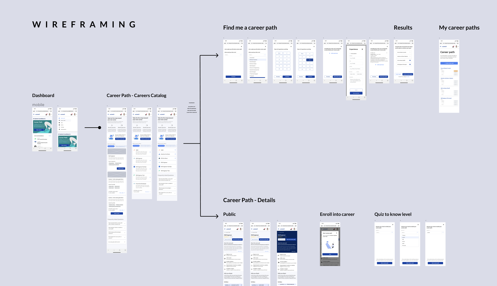
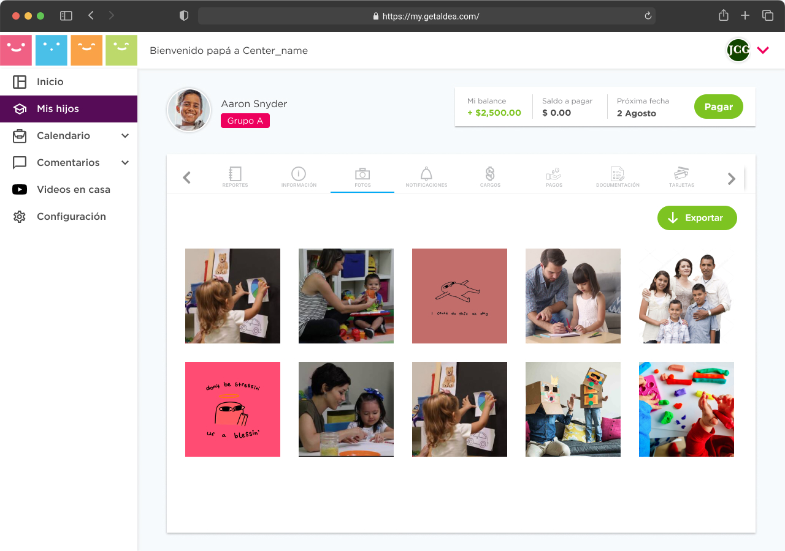
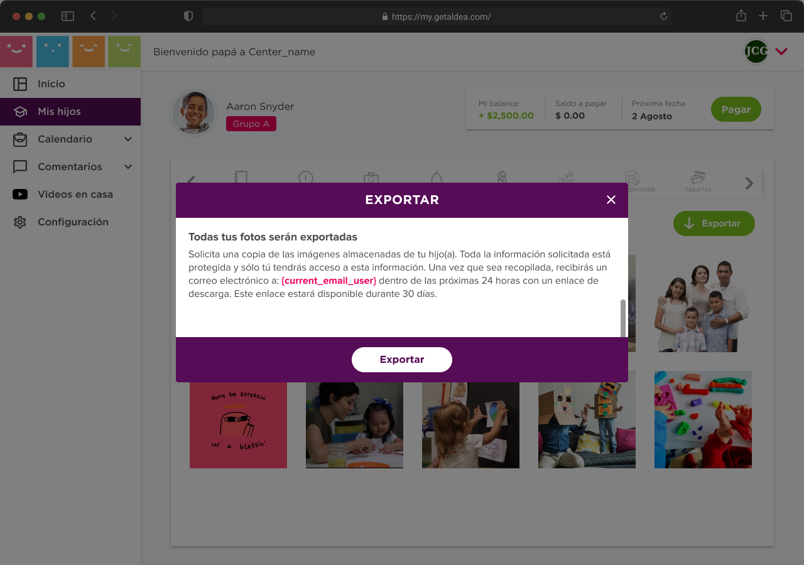
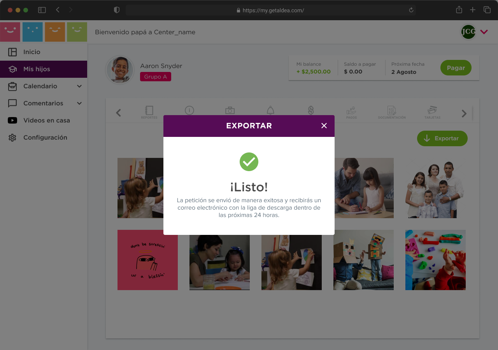
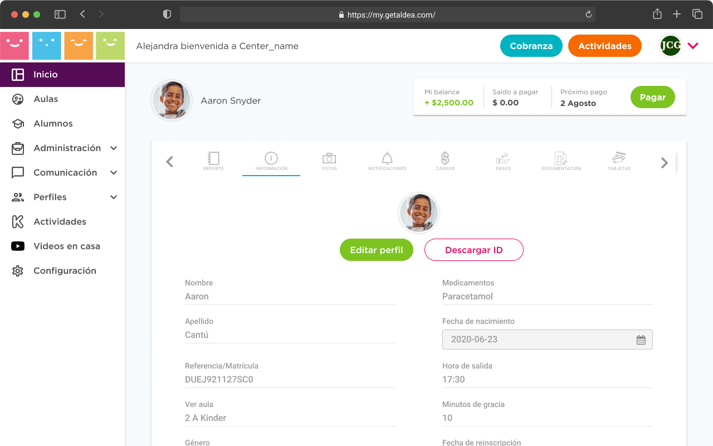
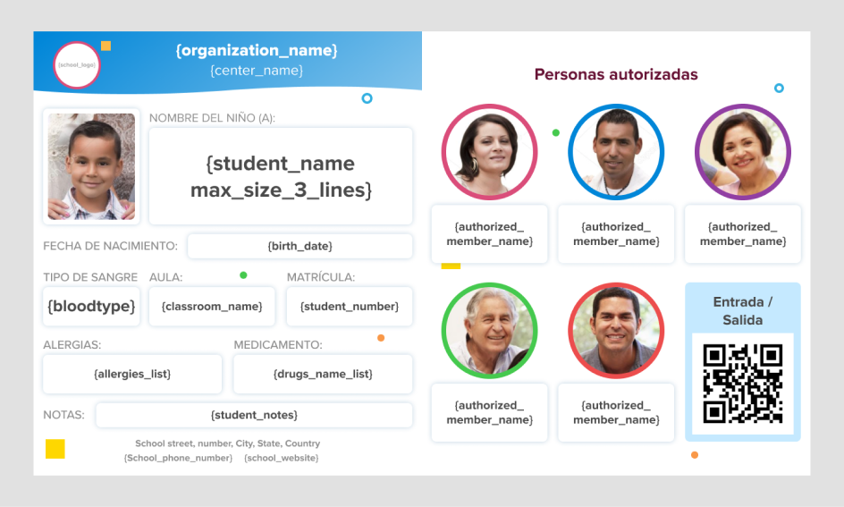

Investigación de usuario y benchmark
Diseño de interfaz
Rediseño de pantallas
Arquitectura de información
Correo electrónico
Prototipado
Testing
Mejor análisis de competencia
Incremento del uso de plataforma
Creación de interfaz de la aplicación
Flujos para nuevas integraciones
In 2019, Maritza Díaz, ITJ's CEO recognized the importance of specialized coaching tailored for IT professionals in their career journeys. Based on personal experience and an understanding of the importance of professional support, ITJ launched a platform dedicated to providing a career coach to every engineer in Latin America. Today, they continue to empower Software Engineers, addressing their questions and guiding them through their career paths.
Este proyecto fue desarrollado durante la pandemia. Fue necesario realizar ajustes al proceso de acceso (Check-in) de estudiantes al aula creando nuevos filtros para detectar posibles casos de COVID-19.

Este es un ejemplo del flujo cuando un maestro realiza el check-in de un estudiante al salón de clases en temporada de pandemia. El docente da click sobre el botón Check-in para comenzar el flujo. El check-in dentro de un modal existía previamente en el flujo. Se decidió mantener la experiencia para crear menos confusión al usuario debido a la aceptación previa del personal docente con este sistema. Agregamos en este flujo los filtros COVID-19 solicitados.
Para Aldea, se avanza día a día con los usuarios ya que, al convertirse en una herramienta para registrar las actividades diarias del personal docente, es grato recabar información precisa sobre las necesidades de un usuario que apropia un producto tanto como el personal docente que trabaja con Aldea. A continuación muestro actualizaciones realizadas como requerimientos solicitado por los maestros.
· Exportar portafolio de imágenes del estudiante



· Descargar ID de estudiante.

f
